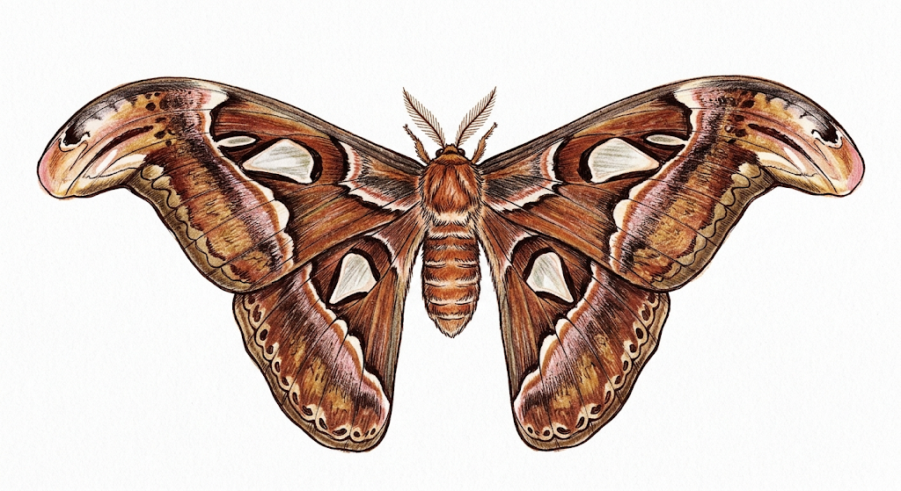

meu primeiro post
Por: Talita Barbosa Rodrigues
Boas-vindas ao meu novo blog! aqui vou compartilhar dicas de programação e curiosidades da área de tecnologia
vou compartilhar conhecimentos sobre tecnologia e programação
Por: Talita Barbosa Rodrigues
Boas-vindas ao meu novo blog! aqui vou compartilhar dicas de programação e curiosidades da área de tecnologia

Por: Talita Barbosa Rodrigues
Estima-se que 90% de todos os dados existentes no mundo hoje foram gerados apenas nos últimos 2 anos. Vivemos em uma verdadeira explosão de informação que não para de acelerar.

Por: Talita Barbosa Rodrigues
Antes do disign ergonomicoe das luzes RGB, o primeiro mouse do mundo foi construido em madeira! Criado por Douglas Engelbart em 1964, ele tinha o formato de uma caixa quadrada e apenas um botão.
Por: Talita Barbosa Rodrigues
O nome é uma homenagem ao rei viking Harald Blatand Gormsson, que unificou tribos da escandinávia.Seu apelido era Harald "Bluetooth" poque seus dentes eram tão podres que tinha uma coloração azul escura.

Por: Talita Barbosa Rodrigues
o termo "bug" (inseto) para erros de sofware ficou famoso em 1957, quando engenheiros encontraram uma mariposa real presa dentro do computador Harvad mark II, causando uma falha no sistema.
Por: Talita Barbosa Rodrigues
Em 1991, pesquisadores da Universidade de Cambridge criaram a primeira webcam para não perder tempo indo até a cozinha e encontrando a cafeteira vazia.Eles monitoravam o nível do café em tempo real nos seus monitores.
Por: Talita Barbosa Rodrigues
Apesar de Alan Turing ser conhecido como pai da computação, ele não criou o primeiro
computador. Entre os primeiro computadores, um deles foi chamdado Clossus projetado por
projetado por Tommy Flowers durante a Segunda Guerra Mundial e também, praticamente na
mesma época, o ENIAC foi projetado por J.Presper Eckert e John Mauchyl.
Embora o Colossus tenha funcionado antes como um "heroi da guerra"
especializado, o ENIAC é frequentemente chamado de "pai" por ser o primeiro
programável de uso geral.
E aí, qual você consideraria como o primeiro computador?
Fonte: The National Museum of Computing